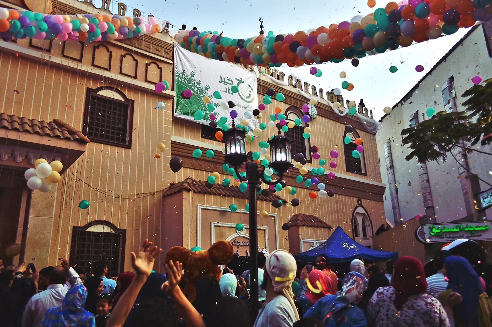
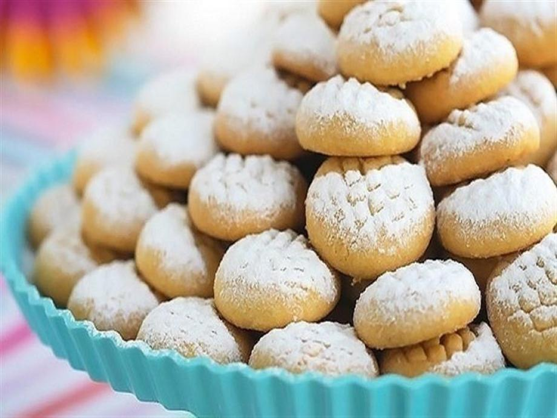

Eid Al Fitr
It is A very specail event for Muslims
since it comes after Ramadan as a prize for muslims
It is very specail especailly for kids since they get "Eidiya"
in it and they wear new and fabulous cloths.
Commemorates the end of the holy month of Ramadan,
in which Muslims fast daily from before dawn until sunset. I
t is commemorated by a large, community-wide prayer service in the morning,
followed by meals and conversation with friends and family.

معمول العيد
الذ ماكولات العيد و اجمل العادات
